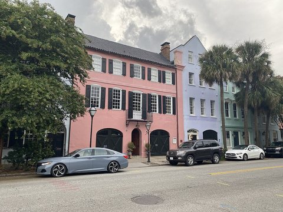
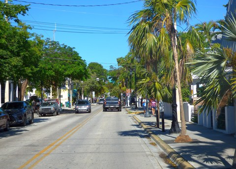

Where to fly your Cirrus next
Weekend getaways and week-long trips chosen for Cirrus owners, with flight time and fuel worked out for your airplane.
1. Pick your Cirrus
Every guide and trip then shows time and fuel for your model. You can fine-tune the numbers on the homepage.
2. Weekend getaways
Six favorites, coast to coast. Each guide covers the FBO, where to stay and eat, and a sample weekend.
 Bar Harbor & AcadiaAcadia’s granite coast, Cadillac Mountain sunrise, carriage roads, popovers and lobster.
Bar Harbor & AcadiaAcadia’s granite coast, Cadillac Mountain sunrise, carriage roads, popovers and lobster.
CharlestonCobblestone streets, acclaimed restaurants and beautifully restored hotels.
Key WestIsland evenings, historic streets, waterfront dining and time on the water. SedonaA mesa-top airport with a restaurant by the runway, red-rock hikes, creekside resorts and spas, Jeep tours and Tlaquepaque.
SedonaA mesa-top airport with a restaurant by the runway, red-rock hikes, creekside resorts and spas, Jeep tours and Tlaquepaque. Jackson Hole & Grand TetonLand inside Grand Teton National Park: Teton views, wildlife, the tram at Teton Village, luxury lodges and Yellowstone to the north.
Jackson Hole & Grand TetonLand inside Grand Teton National Park: Teton views, wildlife, the tram at Teton Village, luxury lodges and Yellowstone to the north. Santa BarbaraThe American Riviera: Spanish-revival streets, the Old Mission, a courthouse tower view, the Urban Wine Trail and Santa Ynez wine country.
Santa BarbaraThe American Riviera: Spanish-revival streets, the Old Mission, a courthouse tower view, the Urban Wine Trail and Santa Ynez wine country.3. Week-long trips
Pick your dates; the planner lays out every leg with fuel-stop suggestions for your airplane.
4. Fly together
The Great Smoky Mountains, a group weekend
A short hop for most of the Southeast and Midwest. Fly in on Friday to Gatlinburg–Pigeon Forge (KGKT), or to Knoxville (KTYS), home of the Cirrus Vision Center, 23 nm away. Saturday in the park: Cades Cove at sunrise, a picnic and a waterfall hike, then dinner together in Townsend.
See the Great Smoky Mountains guide · Nearby: Asheville, Highlands–Cashiers
- Dates, host and event details to be set
- Arrival at KGKT (5,506 ft) or KTYS
- An optional stop at the Cirrus Vision Center, if Cirrus hosts
- Route and fuel options for each Cirrus model; pilots cover their own flying and lodging
- Lodging and dining picks from the guide
- See who’s flying in before you go
This page is a preview prepared for discussion. WingAway Weekends is independent and is not affiliated with or endorsed by Cirrus Aircraft. Times and fuel are planning estimates, not flight plans.